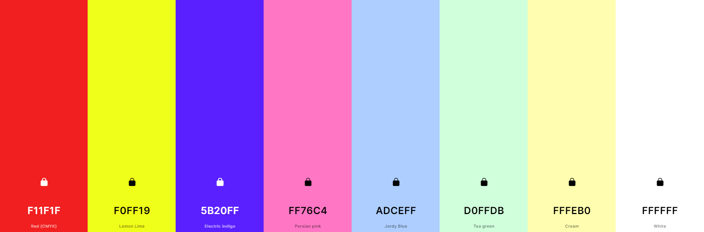

•Colores•

La paleta de colores a usar en la página web se podría dividir en tres partes:
F11F1F, F0FF19,
5B20FF y FF76C4
Estos colores se usarán en las partes de la página web dirigidas a los niños y niñas de mayor edad (de unos 7 años en adelante), ya que son colores
más vivos, enérgicos y que incitan a la actividad. Esto es porque los niños y niñas más cercanos a los 10 años prefieren jugar de forma más activa.
ADCEFF, D0FFDB
y FFFEB0
Estos colores se usarán en las partes de la página web dirigidas a los niños y niñas de menor edad (7 años o menos). Los colores suaves, como los
tonos pastel, son más relajantes y menos estimulantes, lo cual es preferible para los niños de este rango de edad, ya que suelen preferir juegos algo
menos activos.
FFFFFF
El color blanco se utilizaría en todas las partes de la página, concretamente en lugares donde se necesite poner algún párrafo informativo, o
como fondo para alguna imagen, para descongestionar una página con muchos colores y estímulos...